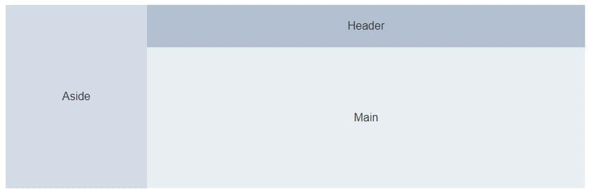
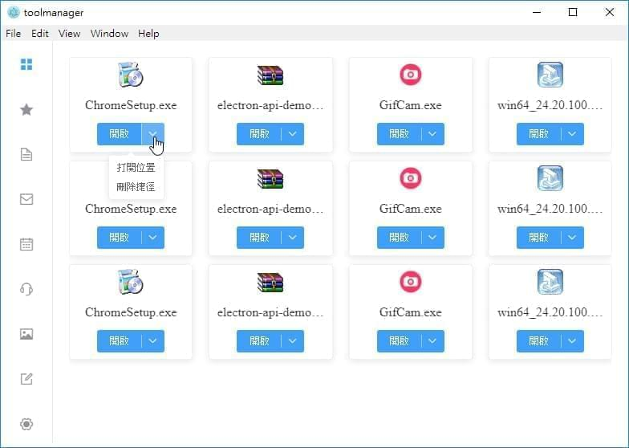
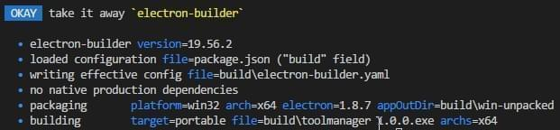

最近看到Electron可以用網頁技術來開發跨平台桌面應用程式，而桌面應用程式的畫面設計一直是我頭疼的地方，如果這個問題可以用HTML+CSS解決那就太棒啦。
學習目標
在開始學習前一樣先給自己訂立個目標，這次就來寫個工具管理器，使用情境大致如下：
- 使用者可以將系統中的檔案拖拉至程式內形成捷徑
- 使用者可以點擊程式中之捷徑開啟檔案
- 程式中提供捷徑的基礎管理功能
除此之外還想順便學習下面兩套工具，所以專案必須用到它們：
建置起始專案
GitHub上已經有人把Electron與Vue包好了，我們就用它來開始專案吧，先照著下方步驟輸入CMD。
1 | # Install vue-cli and scaffold boilerplate |
接下來應該可以看到程式正常運作起來，成功之後就來寫程式吧。
開發檔案拖放功能
首先要完成的是第一個需求，將檔案拖放至程式中，並顯示相關資訊。
開一個新的Component
我們需要新增一個可拖放的頁面用來取代目前的首頁，所以將其命名為HomePage並撰寫拖放的dropFile方法。
1 | export default { |
繫結拖放方法
將template的drop繫結dropFile方法，再用迴圈顯示出拖拉進來的檔案名稱。
1 | <template> |
添加路由
最後把HomePage添加到router內，並設為首頁。
1 | export default new Router({ |
Demo
可以看到下圖，程式已經可以讀取到我們拖放進入的檔案了。
開發檔案開啟功能
再來開始第二項需求，讓使用者可以依靠點擊畫面開啟應用程式。
openExternal
這裡要注意的是Electron的核心畢竟是瀏覽器，想要用瀏覽器開啟檔案明顯是不對勁的(可能會變成下載)，所以應該透過Electron提供的模組來呼叫原生功能做到開啟檔案這件事情。
1 | openFile(file) { |
繫結開啟檔案方法
一樣要將openFile事件繫結到我們的畫面上。
1 | <p v-for="file in files" v-on:click="openFile(file)">{{ file.name }}</p> |
Demo
這時我們點擊擋案名稱就可以順利開啟該檔案了。
重新設計畫面
先前提到的Element-UI是時候上場了，趕快來用它將畫面質感提升。
安裝套件
使用npm或yarn安裝Element。
1 | npm install element-ui --save |
引用Element
在main.js中寫入以下程式。
1 | import ElementUI from 'element-ui'; |
設計Layout
我想讓左邊變成分類，上方列出該分類頁的功能選項，右下方顯示工具列表，用圖片畫出Layout大致如下。

開發左側選單
先將選單資料先定義出來。
1 | categories: [ |
並將資料顯示於畫面之中。
1 | <el-aside> |
這樣左側選單就完成了。
開發捷徑列表
使用Electron的Card元件來重新製作畫面，過程中加入xs、sm、md…等屬性作簡單的RWD，讓視窗在改變大小時能有更好的檢視效果。
1 | <el-row :gutter="20"> |
接著使用Dropdown顯示打開檔案、打開資料夾、刪除捷徑…等控制按鈕，並實作相關功能。
1 | <el-dropdown size="mini" split-button type="primary" trigger="click" @command="handleCommand($event, file)" @click="openFile(file)"> |
這樣捷徑列表也完成了。

開發Header
Header只負責顯示目前的分類名稱與刪除該分類，先把畫面設計出來如下圖。
在刪除時可以使用Element提供的$message功能來讓使用者做Confirm。
1 | this.$confirm('此操作會刪除該標籤與底下的捷徑, 是否繼續?', '提示', { |
Message的效果圖。
Build
終於到了最後一個步驟，程式已經寫的差不多了，該來考慮如何發佈程式了。
關閉DevTool
在開發時期一直陪伴著我們的DevTool當然不能讓使用者看到，這時就要進入src/main/index.js修改視窗設定。
1 | mainWindow = new BrowserWindow({ |
修改建置檔
由於預設是編譯成安裝檔，但我想大多數人都討厭安裝，所以我們就來把它改成單一執行檔的Portable版本，該設定位於package.json下。
1 | "win": { |
開始建置
在CMD輸入以下指令。
1 | npm run build |
成功後可以看到以下訊息。

結語
這個專案包含這篇文章大概寫了四天左右，總地來說，畫面的確是變好寫了，但不確定是否因為不熟Vue的關係，功能的完成也是非常不簡單，除此之外還發生了各種大大小小的問題，這時才深刻的感覺到，一直在用的VsCode是真的厲害阿！雖然都是用Electron開發，但自己還差得太遠了，需要再好好努力。